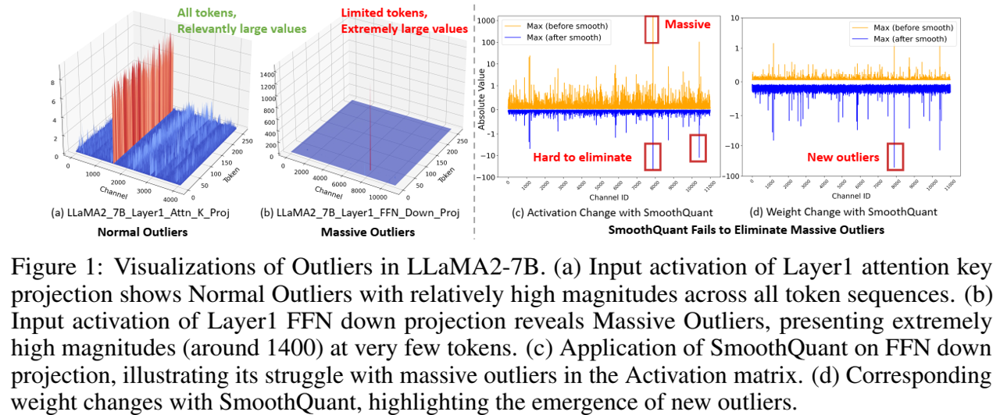
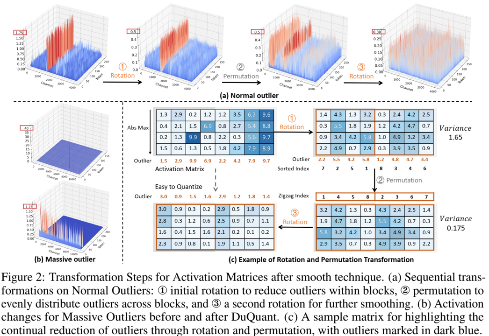
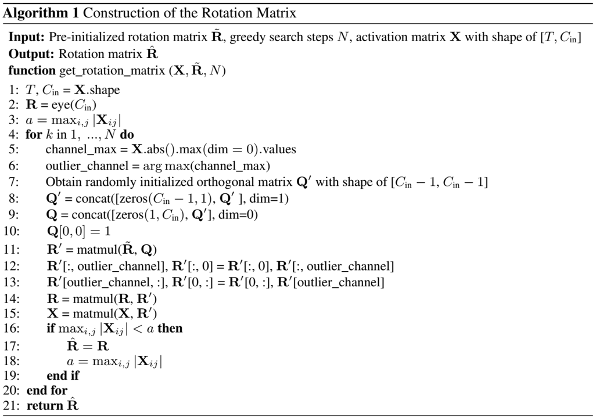

论文阅读三十四：DuQuant：通过双重变换分布异常值可以增强量化LLM
大型语言模型（LLM）的量化面临着重大挑战，特别是由于存在阻碍高效低位表示的异常值激活。传统方法主要是解决正常异常值（Normal Outliers），即所有标记中具有相对较大幅度的激活。然而，这些方法难以平滑显示明显更大值的巨大异常值，这导致低位量化的性能显著下降。本文中，我们介绍DuQuant，一种新的方法，利用旋转和置换变换来更有效的消除大量和正常异常值。首先，DuQuant由构建旋转矩阵开始，使用特定的异常值维度作为先验知识，使用逐块旋转来重分布异常值到相邻通道。第二，我们进一步使用锯齿置换（zigzag permutation）来平衡块间的异常值分布，从而减少逐块方差。后续的旋转进一步平滑激活环境，增强了模型表现。DuQuant简化量化过程，且善于管理异常值，在多个任务上超越各种大小和类型的LLMs的先进基准，即便是4位权重激活量化。我们的代码在： https://github.com/Hsu1023/DuQuant 。
引言
大型语言模型（LLMs）[52,7,51]在广泛的自然语言处理任务中表现出卓越的性能。然而，它们的亿级参数在资源约束的边缘设备上展示了不可忽略的部署挑战，尤其是在内存占用和推理速度方面[23,15,57]。为了克服这些挑战，网络量化方法[20,24]已经大量探索来通过转换浮点数参数到低位形式[18,33,8]来最小化内存占用，并且，通过量化激活和权重加速矩阵乘法过程[65,35,76]来加快推理。

在LLM量化方法中，主要问题是激活异常的存在，加大了量化步长，从而导致显著的精度损失[60]。为了解决这个问题，当前研究已经开发各种方法来解决激活中的正常异常值，它存在于所有标记的多个通道中[13,65]。然而，除了正常异常值，还存在另一类激活异常[49,36]，为巨大异常值。这些异常值特点是，它们的值极大，在标记子集中的出现有限，如图1（b）所示。不幸地是，现有LLM量化方法难以有效解决这些巨大异常值。例如，SmoothQuant[65]，尽管使用平滑因子来转移一些激活异常值到权重部分，仍然不能有效处理具有极大值的巨大异常值，如图1（c）（d）所示。OmniQuant[48]和AffineQuant[40]，另一方面，展示了训练不稳定问题[35]，由于存在巨大异常值。因此，迫切需要为LLM量化方法有效解决正常和巨大两种异常值。
为了解决这个挑战，我们提出双变换量化（DuQuant）方法。我们的动机是重分布不同通道的激活异常值，促进更简单的量化。具体地，我们构建正交旋转矩阵和正交置换矩阵。通过将这些矩阵和激活相乘，我们可以在激活上有效执行列变换，从而允许异常值的重新分布。对于旋转变换方面，我们首先识别异常值的特定维度作为先验知识，并使用贪婪算法来构建旋转矩阵。为了增强乘法效率，我们利用对角逐块旋转矩阵，每个矩阵对应于激活的一小部分。然而，这种方法可能会导致不同块的异常值大小不均匀。因此，我们提出锯齿置换来重新排序激活通道，促进不同块间更加均匀的分布。具体地，我们将激活度最高的通道以来回模式（back-and-forth pattern）分布到各个区块。实现均匀地异常值幅度块之后，我们使用另一个旋转变换来进一步在每个块中重新分布异常值。请注意，我们同时将权重矩阵与旋转矩阵和置换矩阵的转置相乘，从而保留了线性层等价和平滑权重。理论性分析表明，旋转和置换变换极大地减请了由异常值引起的量化挑战。
因此，与QuaRot相比，DuQuant具有几个明显的优势[2]：（1）DuQuant的最优旋转矩阵，通过先验知识指导的贪婪搜索得到，在管理异常值中超越QuaRot的Hadamard旋转；（2）我们的独一无二的锯齿置换极大减少的块间的激活方差，为处理巨大异常值提供了明显优势；和（3）通过联合平滑权重和激活，DuQuant避免了QuaRot中的耗时的GPTQ算法。大量评估证明，我们DuQuant方法在各种基准上极大超越现有的4为权重激活量化基线。值得注意的是，DuQuant在所有LLaMA型号中的常识性QA任务提高了5%，在Vicuna-v1.5-13B的零样本MMLU基准提高了10%。此外，在LLaMA2-7B模型的实际应用中，DuQuant不仅将预填充阶段加速了2.08倍，还将解码阶段的内存使用量减少了3.50倍，对性能的影响最小：与FP16模型相比，困惑度仅增加了0.61倍，准确率下降了2.71%。这些结果突出了DuQuant在提高量化LLM的效率和容量方面的有效性。
动机
正常异常值和巨大异常值。 先前的研究[13,74,33]强调了LLM中激活异常值对模型压缩带来的挑战。这些异常特征在特定特征维度上始终表现出较大的值，并且存在于所有标记序列中 [65]，我们将其称为正常异常值。最近，在LLM中观察到一种不同类型的异常值[49,36]，称为巨大异常值。正常异常值和巨大异常值之间的主要区别是：1）正常异常值在所有标记序列中都存在，而巨大异常值仅限于有限数量的标记序列。2） 巨大异常值表现出明显更大的幅度，通常超过100，大约是其他激活中值的1000倍[49]。在我们的研究中，我们更深入地研究了这两种不同类型的异常值对量化的影响。
FFN模块的第二线性层存在巨大异常值。与之前在Transformer块输出端观察到巨大异常值的研究[49,36]相比，我们首先发现这些极大的激活存在于FFN模块内的下投影层的输入端。如图1所示，LLaMA2-7B模型第1层中的下投影层的输入包含一次显著幅度的激活（约1400次）。此激活被隔离到一个标记，因此被归类为大巨大激活之一。如附录I所示，这种现象在不同层和不同尺寸的模型中得到了一致的观察。
巨大异常值增加了量化难度。尽管之前的研究[65,48,40,1]提出了各种消除异常值特征的方法，但在有效管理巨大异常值方面仍面临挑战。例如，SmoothQuant[65]试图通过将激活除以每通道平滑因子并将其乘以权重矩阵，将量化难度从激活转移到权重。然而，我们观察到，下投影层输入端的这种转移会导致下投影的权重显示明显的异常值，如图1所示。出现这个问题是因为巨大异常值会导致平滑因子变得非常大。此外，极大的异常值可能会导致基于优化的方法遇到损失爆炸的问题。由于梯度不稳定，OmniQuant[48]和AffineQuant[40]都不得不排除下投影层的可学习参数。鉴于4位量化的精度较差，QUIK[1]选择对下投影层使用INT8量化，Atom[76]对128个异常通道应用INT8量化。因此，巨大异常值给量化过程带来了现有方法无法完全解决的新挑战。这一观察促使我们开发了旋转和置换变换，它有效地处理了巨大和正常异常值，并实现了最先进的性能。
方法
在本节中，我们将深入研究异常值的分布，并介绍我们提出的DuQuant方法。DuQuant方法建立在两个关键组成部分之上：1）块对角旋转矩阵，负责特征异常值的局部重新分布，2）锯齿置换，负责不同块间异常值的全局重新排序。
预备知识
作为LLMs的每个transformer块的通用模块，多头自注意力（MSA）和前馈网络（FFN）基本上都包含基础线形层，可以表示为 。这里， 是激活输入，和 表示权重矩阵。本文中，我们聚焦在激活和权重两者的整数均匀量化[26]，旨在获得更好的硬件支持。具体地，b位量化过程将FP16张量X映射到低位整数 ：
符号 表示最近舍入操作， 是量化步长，以及Z表示零点。遵循[65,48,35,40]，我们为激活使用每个标记量化，以及为权重使用每个通道量化，使得为单个激活标记 和 不同的权重输出通道 分配不同的步长。
提出的DuQuant方法
为了解决章节2表述的正常异常值问题，当前量化方法，如SmoothQuant[65]和OmniQuant[65]，通常采用平滑技术。具体地，它涉及利用每个通道平滑对角矩阵，表示为 ， 来缩放输入激活和权重矩阵。该调节允许我们重写原始线性层为 。 中的对角元素 计算为 ，其中， 是表示迁移强度的超参数。然而，尽管这种平滑技术能够转移量化挑战从激活到权重，它仍面临高效管理巨大激活的困难，如图1所示。该挑战起源于包含大型缩放因子 的极大的巨大异常值，从而在权重矩阵中引入新的异常值，导致4为量化中的显著性能下降。
基于这些发现，我们提出DuQuant方法，包含基于平滑技术的旋转和置换变换。通过结合旋转变换和通道置换，我们的DuQuant方法旨在在激活空间重分布这些特征，从而减轻正常和巨大异常值的影响。

旋转变换。与平滑技术相比，我们的目的是应用旋转矩阵到行或列变换，减轻正常和巨大异常值的影响。理想的旋转矩阵，表示为R，应该具有以下特点：1）R是满足 和 |R| = \pm 1$ 的正交矩阵。这允许我们重构Transformer中的线性层为 ；2）R应该能够有效瞄准异常值的位置，并通过矩阵乘法有效减轻它们。然而，由于巨大异常值通常随机分布在激活空间，直接识别能够通过一次旋转变换缓解异常值的最优旋转矩阵R是有挑战性的。为了解决这个问题，我们使用具有先验知识的贪婪搜索来计算旋转矩阵 ，从而近似理想旋转矩阵。具体地， 的计算涉及如下步骤：
- 识别异常值主要聚集的特征维度 ，即， 。这里， 表示X中第i行和第j列的元素。
- 基于搜索到的维度 ，我们构建旋转矩阵，如下：
这里， E_{d^{(1)}}$ 是用于交换激活的第一和第 列的转换矩阵， 表示正交初始化旋转矩阵，其中第一行具体地是均匀分布的。这背后的动机是通过 变换后减轻第一列的异常值。为进一步增加旋转操作的随机性，我们维持第一列，其中异常值已经迁移，并通过将其乘以随机正交矩阵 来随机旋转其他列。
- 令N表示贪婪搜索步，那么近似旋转矩阵 ，其中 。每个 根据方程（2）和识别的特征维度 构造。算法1提供详细的伪代码。

通过这种构造方式，我们可以确保近似最优旋转矩阵 可以有效减缓具有大幅度的异常值，而不是仅使用随机选择的正交旋转矩阵。尽管如此，直接构建整个旋转矩阵是耗时的，且导致大量内存开销。对于快速矩阵乘法，按照[64]，我们一逐块的方式来近似选择矩阵 :
其中， 表示第i块的平方矩阵，它是按照上述三个步骤构建的。块数K由 计算。
置换变换。尽管为了它的时间和存储效率采用了对角块旋转矩阵 ，然而它侧重于局部信息，在进一步减少异常值中引入了潜在限制。这是因为旋转矩阵，在每个较小块内执行，不能结合不同块间的信息来进一步最小化异常值。因此，一个块可能有相对较大的异常值，而另一个块具有较小的异常值，导致不同块间的高方差，如图2所示。这种显示解释了仅使用对角块旋转矩阵不足以有效减少总体异常值。
为了有效减轻总体异常值，平衡不同块间的异常值幅度至关重要。具体地，在每个较小块内，我们表示维度 中最大的异常值为 。同时， 表示第i块的所有 的均值，其中 。那么不同块间的激活幅度中的方差可以表达为：
为了最小化这个方差，以及进一步减小整体异常值，我们引入锯齿置换。具体地，我们生成一个锯齿序列，从分配具有最高激活的通道到第一个块开始。该过程继续分配具有第二高激活的通道到随后的块，以降序直到最后的块K。一旦到达最终的块，顺序反转，从具有接着最高激活的通道开始，并按升序处理。这种来回模式在所有块中持续进行，确保没有单个块始终接收到最高或最低的激活通道。值得注意的是构建置换是一个正交矩阵，我们表示为P，满足条件 且 |P| = \pm 1$ 。通过使用锯齿置换，我们达到不同块间的异常值的平衡分布。这允许我们使用额外的旋转变换，来进一步平滑异常值。图2提供了异常值缓解的说明。
整体DuQuant方法。 为了有效减轻正常和巨大异常值，我们首先使用平滑技术来转移量化挑战从激活到权重。接着，我们引入三角块旋转矩阵 来在激活空间内局部地重分布特征异常值。我们然后提出锯齿置换矩阵用于全局平衡不同块间的异常值，接着是三角块旋转矩阵的另一次应用。总之，transformer中的线性层可以重写为：
其中符号P表示由锯齿方式学习的正交置换矩阵， 和 分别表示第一和第二对角块旋转矩阵。
备注 1 值得注意的是，提出的DuQuant方法可以同时平滑权重矩阵。虽然常用的平滑技术是有效的，它可能引起下投影层的权重矩阵显示明显的异常值，导致性能退化。然而，在提出的DuQuant方法中，我们设计的旋转变换不仅应用于激活输入，而且还应用于权重矩阵。因此，由平滑技术导致的异常值可以通过我们的近似旋转矩阵 缓解，产生更加平滑和量化友好的权重矩阵。此外，该方法不依赖复杂的权重量化技术，如Atom[76]和QuaRot[2]中的GPTQ。
备注 2 为了进一步降低计算和内存成本，我们初始构建第k个旋转矩阵块 ，其中第k块包含最大的离群值。我们然后对所有 ，使得 。 该策略不仅有效缓解异常值的影响，而且减少旋转矩阵块的数量从K到1，显著减少计算和内存需要。重要的是，结合来自方程（5）的可逆矩阵G显著缓解了X和W的量化挑战。因此，量化过程为 。
理论分析
为了进一步说明提出的DuQuant方法的有效性，我们进行旋转和置换变换的理论分析。定理1说明，每个块内，构建的旋转矩阵有效地缓解了最大异常值，从而通过贪婪搜索减少了异常值幅度。定理2揭示了使用锯齿置换确保不同块间共享平衡上限。这表明锯齿置换有效减少了方程（4）中展示的方差，因此支持旋转矩阵仅以降低异常值。详细证明请参考附录B。
定理 1 （旋转）。对于激活输入 是方程（3）构建的对角块矩阵。对于特定块 ，令 表示输入的第j维最大异常值。那么，我们可以得到：
定理 2 （锯齿置换）。对于激活输入 ，可以分成K块，其中 。令 表示X中维度 的最大异常值，从大到小重新排序的异常值表达为 。此外， 表示第i块中所有 的均值， 。令 ， 。那么，按照章节3.2所述的锯齿置换，每个第i块内的均值 一致地满足：
结论
总之，本文提出了DuQuant，这是一种针对大型语言模型（LLM）的创新量化策略，有效地解决了异常激活的挑战。通过整合旋转和置换变换，DuQuant有效地减轻了巨大和正常异常值的影响。这种异常值的战略性重新分布不仅简化了量化过程，而且大大提高了模型性能。因此，DuQuant在4位权重激活量化场景中建立了新的最先进的结果。这一进步增强了资源受限环境中高效LLM的部署。